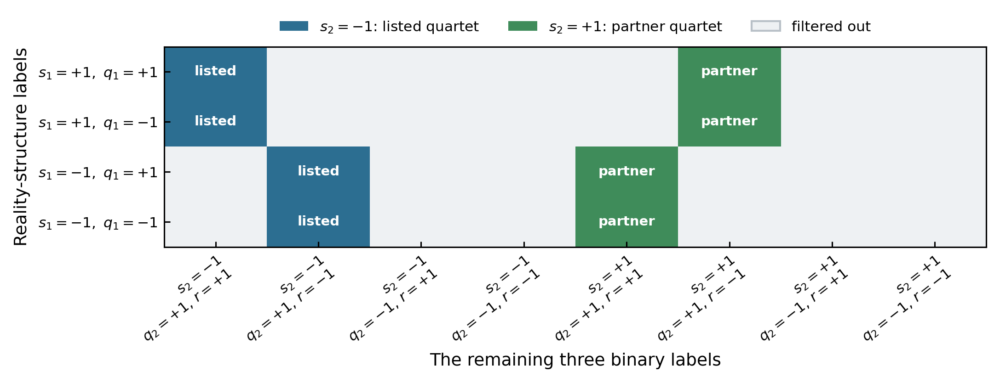
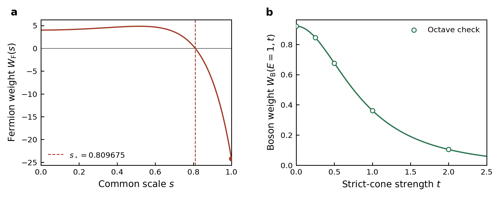

反线性 \(Z_2\)、收缩半群与无符号条件：对合作者文稿的逐项审读、32 类穷举和解析分类
合作者抓住了一个重要方向：把“保证权重为实”的反线性结构与“排除零点或极点”的传播半群分开处理，
的确比只从 Hamiltonian 的 TRS/RP 名称出发更一般。但是，他消息中的简写命题和
ToYinkaiYu.tex 还不是可直接引用的定理。玻色部分可以补成一套
\(J_2\)-诱导规范度规下的八类收缩分类；
费米部分则把二次型系数 \(gA\) 与实际传播生成元 \(A\) 混在了一起，已有精确反例。
阅读指南：先抓住四件事
这份报告同时承担三项工作：解释合作者的原话、核对 note 中的数学、继续完成穷举和证明。 为降低阅读负担，正文始终围绕下面四个问题展开。只关心文章怎么改的读者，可以先读本节、 “合作者消息”以及第 10、11 节；希望核对证明的读者，再依次读第 2、5、6、7、9 节。
- 什么保证权重是实数？由第一个反线性结构 \(J_1K\) 负责；\(K\) 表示复共轭。
- 什么阻止权重穿过无穷大或零？由第二个结构 \(J_2\) 构造的收缩条件负责。
- 哪个矩阵真正传播？二次算符写成 \(h=\frac12\chi^TgA\chi\)，但单体传播是 \(e^A\)，不是 \(e^{gA}\)。
- 为什么“实且没有极点”仍不自动等于正？还要从一个已知为正的参考点连续走到目标构型，并保证途中完整 Fock 迹存在且不为零。
合作者消息：完整引文与逐句解释
下面先逐字保留全部消息，再逐句说明。引文中的英文术语、大小写和括号均沿用原文； 解释部分会指出哪些是正确直觉、哪些需要补条件、哪些已被计算反例否定。
既然这些情形没有极点，只要采样权重是实的，那就一定没有符号问题。而这只要一个Z2的对称性就够了，比如reflection symmetry，连reflection positivity都不用。根据半群理论，无符号问题只需要一个半群结构，再加上一个反线性的Z2对称性，而且两者的要求不互相矛盾。一般照经验来说这种半群都是成对出现，所以有可能还有新的发现。
note/archive/ToYinkaiYu.tex
第一节是关于你的发现。我搭了一个玻色费米通用的框架，详见第二节。第三节还没写好，就是硬算。理论上机器能够使用Octave暴力穷举。需要强调一点，玻色子/费米子h的对称性是gA的对称性决定的，而符号问题是A的对称性决定的，两者其实有差别。
我以前试过暴力穷举法(第二节J1和J2各两个关系式右边的正负号任意取，J1和J2对易或反对易)，但是后来才发现我的Octave不能用了。你有空可以试试。总共2^5=32种情形。J1和J2取sigma_x, i*sigma_y, sigma_z和单位阵这几种矩阵的直积。验证有没有符号问题时得去掉pairing项，否则没法做。只需要验证maximal subgroup，也就是同时有J1 J2两个对称性的时候就行了。
我会尝试用解析方法证明第二节列出的情形没有符号问题。
我用的方法很笨，就是手动写出满足条件的J1 J2，然后给矩阵加上这两个对称性。
第一段：关于“实、无极点、半群和成对出现”
第二段：文件位置和三节分工
第三段：32 类穷举和“去掉 pairing”
第四、五段：解析证明与手工构造
合作者 note：全文存档
下方折叠区完整保存 note/archive/ToYinkaiYu.tex 的原文。点击标题即可展开；
内容按原文件顺序显示，没有删节或改写。正文第 3、4 节按相同顺序讲解，因此读者无需打开其他文件。
展开 ToYinkaiYu.tex 全文（285 行）
%% LyX 2.5.1 created this file. For more info, see https://www.lyx.org/.
%% Do not edit unless you really know what you are doing.
\documentclass{article}
\usepackage{CJKutf8}
\usepackage[T1]{fontenc}
\usepackage[utf8]{inputenc}
\usepackage{amsmath}
\usepackage{amssymb}
\begin{document}
\begin{CJK}{UTF8}{}%
\section{Discovery based on Yinkai's observation}
Case I:Yinkai Yu's case
$J_{1}=I_{2}\otimes\sigma_{x}\otimes I_{N/2}$, $J_{2}=-\sigma_{x}\otimes I_{N}$.
<=> $J^{T}_{1}\Omega J_{1}=\Omega$, $J^{2}_{1}=I_{2N}$, $J^{T}_{2}\Omega J_{2}=-\Omega$,
$J^{2}_{2}=I_{2N}$, $\left[J_{1},J_{2}\right]=0$.
metric is $\eta=J_{2}\Omega$, contraction means ``physical''.
Case II:$J^{T}_{1}\Omega J_{1}=\Omega$, $J^{2}_{1}=-I_{2N}$, $J^{T}_{2}\Omega J_{2}=-\Omega$,
$J^{2}_{2}=I_{2N}$, $\left[J_{1},J_{2}\right]=0$.
<=>$J_{1}=-i\sigma_{y}\otimes\sigma_{z}\otimes I_{N/2}$, $J_{2}=\sigma_{x}\otimes\sigma_{x}\otimes I_{N/2}$.
$J_{1}=\left(\begin{array}{cccc}
0 & 0 & -I_{N/2} & 0\\
0 & 0 & 0 & I_{N/2}\\
I_{N/2} & 0 & 0 & 0\\
0 & -I_{N/2} & 0 & 0
\end{array}\right)$, $J_{2}=\left(\begin{array}{cccc}
0 & 0 & 0 & I_{N/2}\\
0 & 0 & I_{N/2} & 0\\
0 & I_{N/2} & 0 & 0\\
I_{N/2} & 0 & 0 & 0
\end{array}\right)$.
Assume $A=\left(\begin{array}{cccc}
B_{11} & B_{12} & C_{11} & C_{12}\\
B_{21} & B_{22} & C^{T}_{12} & C_{22}\\
D_{11} & D_{12} & -B^{T}_{11} & -B^{T}_{21}\\
D^{T}_{12} & D_{22} & -B^{T}_{12} & -B^{T}_{22}
\end{array}\right)$, where $C_{11}=C^{T}_{11}$, $C_{22}=C^{T}_{22}$, $D_{11}=D^{T}_{11}$,
$D_{22}=D^{T}_{22}$.
\begin{align*}
J^{T}_{1}AJ_{1} & =\left(\begin{array}{cccc}
0 & 0 & I_{N/2} & 0\\
0 & 0 & 0 & -I_{N/2}\\
-I_{N/2} & 0 & 0 & 0\\
0 & I_{N/2} & 0 & 0
\end{array}\right)\left(\begin{array}{cccc}
B_{11} & B_{12} & C_{11} & C_{12}\\
B_{21} & B_{22} & C^{T}_{12} & C_{22}\\
D_{11} & D_{12} & -B^{T}_{11} & -B^{T}_{21}\\
D^{T}_{12} & D_{22} & -B^{T}_{12} & -B^{T}_{22}
\end{array}\right)\left(\begin{array}{cccc}
0 & 0 & -I_{N/2} & 0\\
0 & 0 & 0 & I_{N/2}\\
I_{N/2} & 0 & 0 & 0\\
0 & -I_{N/2} & 0 & 0
\end{array}\right)\\
& =\left(\begin{array}{cccc}
D_{11} & D_{12} & -B^{T}_{11} & -B^{T}_{21}\\
-D^{T}_{12} & -D_{22} & B^{T}_{12} & B^{T}_{22}\\
-B_{11} & -B_{12} & -C_{11} & -C_{12}\\
B_{21} & B_{22} & C^{T}_{12} & C_{22}
\end{array}\right)\left(\begin{array}{cccc}
0 & 0 & -I_{N/2} & 0\\
0 & 0 & 0 & I_{N/2}\\
I_{N/2} & 0 & 0 & 0\\
0 & -I_{N/2} & 0 & 0
\end{array}\right)\\
& =\left(\begin{array}{cccc}
-B^{T}_{11} & B^{T}_{21} & -D_{11} & D_{12}\\
B^{T}_{12} & -B^{T}_{22} & D^{T}_{12} & -D_{22}\\
-C_{11} & C_{12} & B_{11} & -B_{12}\\
C^{T}_{12} & -C_{22} & -B_{21} & B_{22}
\end{array}\right)=\bar{A}
\end{align*}
So $B_{11}=-B^{\dagger}_{11}$, $B_{22}=-B^{\dagger}_{22}$, $B_{12}=B^{\dagger}_{21}$,
$C_{11}=-\bar{D}_{11}$, $C_{22}=-\bar{D}_{22}$, $C_{12}=\bar{D}_{12}$.
So $A=\left(\begin{array}{cccc}
B_{11} & B_{12} & C_{11} & C_{12}\\
B^{\dagger}_{12} & B_{22} & C^{T}_{12} & C_{22}\\
-\bar{C}_{11} & \bar{C}_{12} & -B^{T}_{11} & -\bar{B}_{12}\\
C^{\dagger}_{12} & -\bar{C}_{22} & -B^{T}_{12} & -B^{T}_{22}
\end{array}\right)$.
\begin{align*}
J^{T}_{2}AJ_{2} & =\left(\begin{array}{cccc}
0 & 0 & 0 & I_{N/2}\\
0 & 0 & I_{N/2} & 0\\
0 & I_{N/2} & 0 & 0\\
I_{N/2} & 0 & 0 & 0
\end{array}\right)\left(\begin{array}{cccc}
B_{11} & B_{12} & C_{11} & C_{12}\\
B^{\dagger}_{12} & B_{22} & C^{T}_{12} & C_{22}\\
-\bar{C}_{11} & \bar{C}_{12} & -B^{T}_{11} & -\bar{B}_{12}\\
C^{\dagger}_{12} & -\bar{C}_{22} & -B^{T}_{12} & -B^{T}_{22}
\end{array}\right)\left(\begin{array}{cccc}
0 & 0 & 0 & I_{N/2}\\
0 & 0 & I_{N/2} & 0\\
0 & I_{N/2} & 0 & 0\\
I_{N/2} & 0 & 0 & 0
\end{array}\right)\\
& =\left(\begin{array}{cccc}
C^{\dagger}_{12} & -\bar{C}_{22} & -B^{T}_{12} & -B^{T}_{22}\\
-\bar{C}_{11} & \bar{C}_{12} & -B^{T}_{11} & -\bar{B}_{12}\\
B^{\dagger}_{12} & B_{22} & C^{T}_{12} & C_{22}\\
B_{11} & B_{12} & C_{11} & C_{12}
\end{array}\right)\left(\begin{array}{cccc}
0 & 0 & 0 & I_{N/2}\\
0 & 0 & I_{N/2} & 0\\
0 & I_{N/2} & 0 & 0\\
I_{N/2} & 0 & 0 & 0
\end{array}\right)\\
& =\left(\begin{array}{cccc}
-B^{T}_{22} & -B^{T}_{12} & -\bar{C}_{22} & C^{\dagger}_{12}\\
-\bar{B}_{12} & -B^{T}_{11} & \bar{C}_{12} & -\bar{C}_{11}\\
C_{22} & C^{T}_{12} & B_{22} & B^{\dagger}_{12}\\
C_{12} & C_{11} & B_{12} & B_{11}
\end{array}\right)=\pm\bar{A}
\end{align*}
For the generators of maximal subgroup, $B_{11}=-B^{\dagger}_{22}$,
$B_{12}=-B^{\dagger}_{12}$, $C_{11}=-C_{22}$, $C_{12}=C^{T}_{12}$.
$A=\left(\begin{array}{cccc}
B_{11} & B_{12} & C_{11} & C_{12}\\
-B_{12} & B_{11} & C_{12} & -C_{11}\\
-\bar{C}_{11} & \bar{C}_{12} & -B^{T}_{11} & B^{T}_{12}\\
\bar{C}_{12} & \bar{C}_{11} & -B^{T}_{12} & -B^{T}_{11}
\end{array}\right)$.
For the generators in the invariant cone, $B_{11}=B^{\dagger}_{22}$,
$B_{12}=B^{\dagger}_{12}$, $C_{11}=C_{22}$, $C_{12}=-C^{T}_{12}$,
so $A=\left(\begin{array}{cccc}
B_{11} & B_{12} & C_{11} & C_{12}\\
B_{12} & -B_{11} & -C_{12} & C_{11}\\
-\bar{C}_{11} & \bar{C}_{12} & -B^{T}_{11} & -B^{T}_{12}\\
-\bar{C}_{12} & -\bar{C}_{11} & -B^{T}_{12} & B^{T}_{11}
\end{array}\right)$,
\begin{align*}
J_{2}\Omega A & =\left(\begin{array}{cccc}
0 & -I_{N/2} & 0 & 0\\
-I_{N/2} & 0 & 0 & 0\\
0 & 0 & 0 & I_{N/2}\\
0 & 0 & I_{N/2} & 0
\end{array}\right)\left(\begin{array}{cccc}
B_{11} & B_{12} & C_{11} & C_{12}\\
B_{12} & -B_{11} & -C_{12} & C_{11}\\
-\bar{C}_{11} & \bar{C}_{12} & -B^{T}_{11} & -B^{T}_{12}\\
-\bar{C}_{12} & -\bar{C}_{11} & -B^{T}_{12} & B^{T}_{11}
\end{array}\right)\\
& =\left(\begin{array}{cccc}
-B_{12} & B_{11} & C_{12} & -C_{11}\\
-B_{11} & -B_{12} & -C_{11} & -C_{12}\\
-\bar{C}_{12} & -\bar{C}_{11} & -B^{T}_{12} & B^{T}_{11}\\
-\bar{C}_{11} & \bar{C}_{12} & -B^{T}_{11} & -B^{T}_{12}
\end{array}\right)\leq0
\end{align*}
<=>$\left(\begin{array}{cccc}
B_{12} & -B_{11} & -C_{12} & C_{11}\\
B_{11} & B_{12} & C_{11} & C_{12}\\
\bar{C}_{12} & \bar{C}_{11} & B^{T}_{12} & -B^{T}_{11}\\
\bar{C}_{11} & -\bar{C}_{12} & B^{T}_{11} & B^{T}_{12}
\end{array}\right)\geq0$. Good.
\section{A short summary for bosons and fermions:}
Let $g=\left(\begin{array}{cc}
0 & -I_{N}\\
I_{N} & 0
\end{array}\right)=-\Omega$ for bosons and $g=\left(\begin{array}{cc}
0 & I_{N}\\
I_{N} & 0
\end{array}\right)$ for fermions. $h_{i}=\frac{1}{2}\chi^{T}gA_{i}\chi$, $\chi=\left(\begin{array}{c}
a_{1}\\
a_{2}\\
\vdots\\
a_{N}\\
a^{+}_{1}\\
a^{+}_{2}\\
\vdots\\
a^{+}_{N}
\end{array}\right)$ for bosons and $\chi=\left(\begin{array}{c}
c_{1}\\
c_{2}\\
\vdots\\
c_{N}\\
c^{+}_{1}\\
c^{+}_{2}\\
\vdots\\
c^{+}_{N}
\end{array}\right)$ for fermions. $gA+A^{T}g=0$($sp\left(2N,\mathbb{C}\right)$ for
bosons, $so\left(2N,\mathbb{C}\right)$ for fermions).
$\left[\frac{1}{2}\chi^{T}gA_{1}\chi,\frac{1}{2}\chi^{T}gA_{2}\chi\right]=\frac{1}{2}\chi^{T}g\left[A_{1},A_{2}\right]\chi$.
So we have
\[
p=\mathrm{tr}\left(e^{h_{1}}e^{h_{2}}\cdots e^{h_{k}}\right)=\det\left(I\mp e^{A_{1}}e^{A_{2}}\cdots e^{A_{k}}\right)^{\mp1/2}.
\]
For bosons, we have 6 cases:
1)Time reversal symmetry:(two $Z_{2}$ anti-linear symmetries) $J^{T}_{1}gJ_{1}=g$,
$J^{2}_{1}=-I_{2N}$, $J^{T}_{2}gJ_{2}=-g$, $J^{2}_{2}=-I_{2N}$,
$\left[J_{1},J_{2}\right]=0$.
2)reflection positivity:$J^{T}_{1}gJ_{1}=g$, $J^{2}_{1}=I_{2N}$.
3-6):
$J^{T}_{1}gJ_{1}=g$, $J^{2}_{1}=I_{2N}$, $J^{T}_{2}gJ_{2}=-g$,
$J^{2}_{2}=I_{2N}$, $\left[J_{1},J_{2}\right]=0$. (Yinkai's case)
$J^{T}_{1}gJ_{1}=g$, $J^{2}_{1}=-I_{2N}$, $J^{T}_{2}gJ_{2}=-g$,
$J^{2}_{2}=I_{2N}$, $\left[J_{1},J_{2}\right]=0$. (new case, also
non-hermitian)
$J^{T}_{1}gJ_{1}=-g$, $J^{2}_{1}=I_{2N}$, $J^{T}_{2}gJ_{2}=-g$,
$J^{2}_{2}=I_{2N}$, $\left\{ J_{1},J_{2}\right\} =0$.(non-hermitian
case I)
$J^{T}_{1}gJ_{1}=-g$, $J^{2}_{1}=-I_{2N}$, $J^{T}_{2}gJ_{2}=-g$,
$J^{2}_{2}=I_{2N}$, $\left\{ J_{1},J_{2}\right\} =0$.(non-hermitian
case II)
\begin{align*}
J^{T}_{1}AJ_{1} & =\bar{A},\\
J_{2}gA+A^{\dagger}J_{2}g & \leq0.
\end{align*}
For fermions, only two cases have been discovered:
\begin{align*}
J^{T}_{1}AJ_{1} & =\bar{A},\\
iJ_{2}gA-iA^{\dagger}J_{2}g & \leq0,
\end{align*}
1)$J^{T}_{1}gJ_{1}=g$, $J^{2}_{1}=I_{2N}$, $J^{T}_{2}gJ_{2}=-g$,
$J^{2}_{2}=-I_{2N}$, $\left\{ J_{1},J_{2}\right\} =0$.(Reflection
positivity)
2)$J^{T}_{1}gJ_{1}=g$, $J^{2}_{1}=-I_{2N}$, $J^{T}_{2}gJ_{2}=-g$,
$J^{2}_{2}=-I_{2N}$, $\left\{ J_{1},J_{2}\right\} =0$.(Time-reversal
positivity)
Now let's guess based on the similarity between bosonic and fermionic
cases:
3)$J^{T}_{1}gJ_{1}=-g$, $J^{2}_{1}=I_{2N}$, $J^{T}_{2}gJ_{2}=-g$,
$J^{2}_{2}=-I_{2N}$, $\left[J_{1},J_{2}\right]=0$.
4)$J^{T}_{1}gJ_{1}=-g$, $J^{2}_{1}=-I_{2N}$, $J^{T}_{2}gJ_{2}=-g$,
$J^{2}_{2}=-I_{2N}$, $\left[J_{1},J_{2}\right]=0$.
5)(?? positivity)$J^{T}_{1}gJ_{1}=-g$, $J^{2}_{1}=I_{2N}$.
6)(two $Z_{2}$ anti-linear symmetries)$J^{T}_{1}gJ_{1}=-g$, $J^{2}_{1}=-I_{2N}$,
$J^{T}_{2}gJ_{2}=-g$, $J^{2}_{2}=I_{2N}$, $\left[J_{1},J_{2}\right]=0$.
\section{Tests for new fermion cases}
For fermions, $A=\left(\begin{array}{cccc}
B_{11} & B_{12} & C_{11} & C_{12}\\
B_{21} & B_{22} & -C^{T}_{12} & C_{22}\\
D_{11} & D_{12} & -B^{T}_{11} & -B^{T}_{21}\\
-D^{T}_{12} & D_{22} & -B^{T}_{12} & -B^{T}_{22}
\end{array}\right)$, $C_{11}=-C^{T}_{11}$, $C_{22}=-C^{T}_{22}$, $D_{11}=-D^{T}_{11}$,
$D_{22}=-D^{T}_{22}$.
Case 6
\clearpage
\end{CJK}
\end{document}

1. 合作者消息到底在说什么
1.1 “没有极点 + 实权重”这句话的正确版本
他的物理直觉是：一个连续实函数若从正参考点出发，而且沿途既不为零也不发散，就不能改变符号。 对玻色高斯迹，符号翻转的主要障碍是 \(\det(I-M)=0\) 的极点；对费米高斯迹，障碍是 \(\det(I+M)=0\) 的零点。 因而，把“现实性”和“排除单位圆特殊本征值”分给两个不同结构来负责，是合理的研究纲领。
1.2 “一个 \(Z_2\) reflection symmetry 就够了”是什么意思
这里的 reflection symmetry 应理解为一个实正交矩阵 \(J_1\) 与复共轭 \(K\) 组成的反线性结构 \(J_1K\)，它使传播生成元满足 \(J_1^TAJ_1=\bar A\)，从而把传播谱和行列式配成复共轭。 它直接保证传播行列式的 radicand 为实；完整权重是否为实还要检查正规序标量和 operator lift。它不等于文章目前使用的 reflection positivity。
文章中的 RP 还要求跨反射面的耦合属于一个正锥，或者可写成反射成对的算符平方；这个“positivity” 部分才直接保证迹非负。单个反线性 reflection 只保证现实性，不能单独排除负号。 同样，\(J^2=-I\) 表示反线性算符的平方为 \(-1\)，严格说不是向量空间上的普通 \(Z_2\) 表示； 只有其对矩阵的共轭作用是二次作用后回到原点。
1.3 “半群通常成对出现”对应什么新发现
合作者已经写出 \(s_2=-1\) 的四类，此时 \(J_2g\) 本身是 Hermitian involution。 对称的伙伴是 \(s_2=+1\)：此时 \(J_2g\) 是实反对称矩阵，必须改用 \(\eta=-iJ_2g\)。这一处因子 \(i\) 正好产生另外四类。换句话说，“成对出现”的猜想在玻色 32 类中确实实现了，但配对不是简单复制，而是由度规的 Hermiticity 决定。
1.4 “\(h\) 的对称性由 \(gA\) 决定，符号问题由 \(A\) 决定”是关键提醒
二次算符写作 \(h=\frac12\chi^TgA\chi\)。矩阵 \(gA\) 是算符的二次型系数， \(A\) 才是 Heisenberg/Nambu 传播 \(e^A\) 的生成元。一个 \(J\) 可以把 \(gA\) 映成 \(-\overline{gA}\)，同时仍把 \(A\) 映成 \(\bar A\)。前者是 Hamiltonian 的“反对称”， 后者仍可保证传播行列式为实。这个区别是正确的，也是非 Hermitian 类可以出现的原因。
但这个提醒必须贯彻到底：note 的费米不等式 \(iJ_2gA-iA^\dagger J_2g\preceq0\) 恰恰对 \(gA\) 施加了 Wei 型约束，却用 \(e^A\) 计算权重。降指标 \(A\mapsto gA\) 不是相似变换，不能把 \(e^{gA}\) 的半群结论搬给 \(e^A\)。
1.5 “去掉 pairing，只检验 maximal subgroup”为什么不够
这可以作为快速寻找矩阵代表、检查 reality 子空间的计算策略，但不能证明无极点或无符号。 maximal subgroup 是收缩锥的边界，含有恒等传播；对玻色子 \(M=I\) 本身就是极点。 更重要的是，本报告发现的 \(s_2=+1\) 四个伙伴类要进入严格收缩内部，必须含 pairing。 先去掉 pairing 会恰好删掉新结构最关键的方向。
2. 先区分四个数学对象
统一写成
| 对象 | 作用 | 不能与什么混同 |
|---|---|---|
| \(gA\) | 二次算符 \(h\) 的系数；玻色时对称，费米时反对称 | 不是一般意义下 \(e^A\) 的生成元 |
| \(A\) | Nambu/Majorana 单体传播生成元，属于 \(\mathfrak{sp}\) 或 \(\mathfrak{so}\) | 不能任意用 \(gA\) 替换 |
| \(M=\prod e^{A_\ell}\) | 决定 \(\det(I\mp M)\) 的零点、极点与 Green 函数 | 行列式只看到投影表示，未自动固定 Fock 算符的双覆盖分支 |
| \(\Tr\prod e^{h_\ell}\) | 真正的 Monte Carlo 构型权重 | 还含正规序标量、trace-class 条件和 operator-fixed 平方根 |
取一个实正交矩阵 \(J\)，记 \(J^TgJ=sg\)、\(J^2=qI\)。如果 \(J^TAJ=\bar A\)，则
所以 \(s=+1\) 时 \(J K\) 是 \(h\) 的反线性对称；\(s=-1\) 时它是 \(h\) 的反线性 反对称。但是在两种情况下，它都可以是传播 \(A\) 的现实结构。合作者强调的 “Hamiltonian 对称性”和“符号问题所见的传播对称性”之差，精确地体现在这个 \(s\) 上。
2.1 一个最小反例：端点都无极点，符号仍可不同
一模玻色子取 \(h=B(n+\tfrac12)\)。代数延拓的权重是
\(B=-1\) 和 \(B=+1\) 两个端点都满足 \(1-e^B\ne0\)，权重也都为实；但数值分别是 \(+0.9595173757\) 和 \(-0.9595173757\)。连接它们的实路径必须穿过 \(B=0\) 的极点， 而 \(B=+1\) 端点也不属于裸 Fock 迹收敛域。
3. ToYinkaiYu.tex 第一节逐项解读
3.1 Case I：当前 \(U_2\) benchmark 的传播结构
“Case I:Yinkai Yu's case”
\(J_{1}=I_{2}\otimes\sigma_{x}\otimes I_{N/2}\), \(J_{2}=-\sigma_{x}\otimes I_{N}\).
\(\Longleftrightarrow J^{T}_{1}\Omega J_{1}=\Omega\), \(J^{2}_{1}=I_{2N}\), \(J^{T}_{2}\Omega J_{2}=-\Omega\), \(J^{2}_{2}=I_{2N}\), \([J_{1},J_{2}]=0\).
“metric is \(\eta=J_{2}\Omega\), contraction means ‘physical’.”
第一行直接给出两个矩阵，第二行列出它们的全部代数性质。这里的 \(X\) 就是 \(\sigma_x\)。这些关系可逐项相乘验证：\(J_1\) 保持辛形式，\(J_2\) 把辛形式变号， 二者都平方为单位阵且彼此对易。
物理含义是：\(J_1K\) 交换两个 flavor 并做复共轭，负责现实性； \(J_2\) 把辛形式变号，\(\eta=J_2\Omega=-J_2g\) 是不定度规。 在 2026-07-19 的独立报告中，稳定自由配对因子是严格 \(\eta\)-收缩， \(U_2\) 相位因子位于该半群的边界；乘积因此逐构型无极点。 这正是合作者第一节所说“Yinkai's case”的几何解释。
3.2 Case II：第二个反线性结构
“Case II:”
\(J^{T}_{1}\Omega J_{1}=\Omega\), \(J^{2}_{1}=-I_{2N}\), \(J^{T}_{2}\Omega J_{2}=-\Omega\), \(J^{2}_{2}=I_{2N}\), \([J_{1},J_{2}]=0\).
\(\Longleftrightarrow J_{1}=-i\sigma_{y}\otimes\sigma_{z}\otimes I_{N/2}\), \(J_{2}=\sigma_{x}\otimes\sigma_{x}\otimes I_{N/2}\).
与 Case I 相比，唯一改变的关键离散性质是 \(J_1^2=-I\)。显式表示为 \(J_1=-i\sigma_y\otimes Z\)、\(J_2=X\otimes X\)。 这里 \(J_1K\) 是 Kramers 型反线性结构，而 \(J_2\) 仍提供收缩度规。 这是一个合法的新代数类，不是 Case I 的简单基变换。
3.3 一般辛生成元与 \(J_1\) reality 的分块计算
“Assume”
“\(J_1^TAJ_1=\bar A\). So \(B_{11}=-B^\dagger_{11}\), \(B_{22}=-B^\dagger_{22}\), \(B_{12}=B^\dagger_{21}\), \(C_{11}=-\bar D_{11}\), \(C_{22}=-\bar D_{22}\), \(C_{12}=\bar D_{12}\).”
第一幅矩阵不是额外假设，而是 \(gA+A^Tg=0\) 的一般分块解。右上角 \(C\) 和左下角 \(D\) 必须对称，右下角则由左上角 \(B\) 固定。把上节给出的 \(J_1\) 从左右乘上去， 再逐块与 \(\bar A\) 比较，便得到
与辛李代数和 reality 条件一致。这部分“硬算”是正确的，可视为通用分类在一个具体表示中的坐标展开。
3.4 \(J_2\) 把同一空间分成半群边界与锥内部
“\(J^{T}_{2}AJ_{2}=\pm\bar A\).”
“For the generators of maximal subgroup, \(B_{11}=-B^{\dagger}_{22}\), \(B_{12}=-B^{\dagger}_{12}\), \(C_{11}=-C_{22}\), \(C_{12}=C^{T}_{12}\).”
“For the generators in the invariant cone, \(B_{11}=B^{\dagger}_{22}\), \(B_{12}=B^{\dagger}_{12}\), \(C_{11}=C_{22}\), \(C_{12}=-C^{T}_{12}\).”
\(J_2\Omega A\leq0\), equivalently the explicitly displayed opposite-sign block matrix is positive semidefinite. “Good.”
再施加 \(J_2^TAJ_2=\pm\bar A\) 后，正号部分给出 maximal subgroup 的生成元， 负号部分给出 invariant cone 方向。note 最后写出的半正定块矩阵说明该锥在这个表示中 可以非空。不过结尾的 “Good” 目前只把收缩要求改写成了一个显式矩阵不等式； 它还没有单独处理 Fock 迹收敛、 正参考点、平方根分支和完整权重。
4. ToYinkaiYu.tex 第二节的通用框架
4.1 正确而有价值的骨架
“Let \(g=\left(\begin{smallmatrix}0&-I_N\\I_N&0\end{smallmatrix}\right)=-\Omega\) for bosons and \(g=\left(\begin{smallmatrix}0&I_N\\I_N&0\end{smallmatrix}\right)\) for fermions.”
\(h_i=\frac12\chi^TgA_i\chi\), \(gA+A^Tg=0\) (\(sp(2N,\mathbb C)\) for bosons, \(so(2N,\mathbb C)\) for fermions).
\[ \left[\frac12\chi^TgA_1\chi,\frac12\chi^TgA_2\chi\right] =\frac12\chi^Tg[A_1,A_2]\chi. \]
这段把玻色和费米统一为 \(gA+A^Tg=0\)，并指出二次算符的对易子对应 \([A_1,A_2]\)。 这是合适的框架：玻色为复辛李代数，费米为复正交李代数，固定场传播都由 \(e^A\) 表示。 用五个符号
枚举所有关系，也正是合作者所说的 \(2^5=32\) 种情形。
4.2 高斯迹公式缺少的条件
这条式子作为有限维代数恒等式的提示没有问题， 但若要成为无符号定理，至少要补充：
- 玻色 Fock 迹的 trace-class/收敛条件；
- 正规序产生的标量 \(e^\xi\)；
- Nambu 双倍表示中平方根的 metaplectic 或 spin lift；
- 从正参考点连续选定的算符分支，不能逐点取 principal square root。
4.3 六个玻色情形的状态
note 原文条目 1：“Time reversal symmetry: (two \(Z_2\) anti-linear symmetries)”
\[ J_1^TgJ_1=g,\quad J_1^2=-I,\quad J_2^TgJ_2=-g,\quad J_2^2=-I,\quad [J_1,J_2]=0. \]note 原文条目 2：“reflection positivity: \(J_1^TgJ_1=g,\ J_1^2=I\).”
note 原文条目 3（Yinkai's case）：
\[ J_1^TgJ_1=g,\quad J_1^2=I,\quad J_2^TgJ_2=-g,\quad J_2^2=I,\quad [J_1,J_2]=0. \]note 原文条目 4（new case, also non-hermitian）：
\[ J_1^TgJ_1=g,\quad J_1^2=-I,\quad J_2^TgJ_2=-g,\quad J_2^2=I,\quad [J_1,J_2]=0. \]note 原文条目 5（non-hermitian case I）：
\[ J_1^TgJ_1=-g,\quad J_1^2=I,\quad J_2^TgJ_2=-g,\quad J_2^2=I,\quad \{J_1,J_2\}=0. \]note 原文条目 6（non-hermitian case II）：
\[ J_1^TgJ_1=-g,\quad J_1^2=-I,\quad J_2^TgJ_2=-g,\quad J_2^2=I,\quad \{J_1,J_2\}=0. \]六项之后共同施加 \(J_1^TAJ_1=\bar A\) 与 \(J_2gA+A^\dagger J_2g\leq0\)。
条目 1、2 是 note 用来对照的既有路线；条目 3--6 才是两个结构同时出现的四个候选类。 下面的状态表把原称呼与本报告的严格判断并列。尤其要注意，条目 2 只写了一个 reality 关系，没有写 reflection positivity 所需的正锥，因此名称强于实际条件。
| 文稿条目 | 文稿称呼 | 本报告判断 |
|---|---|---|
| “Time reversal symmetry: (two \(Z_2\) anti-linear symmetries)” | TRS | 保留。与现有 Kramers 现实性路线相关，但仍要附加有限迹条件。 |
| “reflection positivity: \(J_1^TgJ_1=g,\ J_1^2=I\)” | reflection positivity | 名称不成立。单个 \(J_1K\) 只给 reality，不含 RP 的正锥。 |
| “3-6)” 后列出的四组 \(J_1,J_2\) 关系 | 四个新/非 Hermitian 类 | 可完成为定理。它们是 \(s_2=-1\) 的四个严格收缩类。 |
| 未列出 | \(s_2=+1\) 伙伴类 | 新增四类。须用 \(\eta=-iJ_2g\)，严格内部需要 pairing。 |
4.4 费米收缩不等式的核心错位
“For fermions, only two cases have been discovered:”
\[ J_1^TAJ_1=\bar A,\qquad iJ_2gA-iA^\dagger J_2g\leq0. \]若把 \(C=gA\) 当作 Majorana 二次型，这看起来类似 Wei 的半群条件； 但文稿迹公式传播的是 \(e^A\)，不是 \(e^C\)。在 Majorana 基 \(g=I\) 中，正确条件可以写成 \(i(J_2A-\bar A J_2)\preceq0\)，等价于对 \(e^A\) 的 Hermitian 不定度规收缩。一般 Nambu 基必须直接对 \(A\) 写 \(\eta A+A^\dagger\eta\preceq0\)。 第 9 节给出这条原文不等式的二维精确反例。
4.5 费米六项：原文、含义和当前结论
note 称“only two cases have been discovered”的条目 1（Reflection positivity）：
\[ J_1^TgJ_1=g,\quad J_1^2=I,\quad J_2^TgJ_2=-g,\quad J_2^2=-I,\quad \{J_1,J_2\}=0. \]条目 2（Time-reversal positivity）：
\[ J_1^TgJ_1=g,\quad J_1^2=-I,\quad J_2^TgJ_2=-g,\quad J_2^2=-I,\quad \{J_1,J_2\}=0. \]随后原文说：“Now let's guess based on the similarity between bosonic and fermionic cases:”
猜测 3：
\[ J_1^TgJ_1=-g,\quad J_1^2=I,\quad J_2^TgJ_2=-g,\quad J_2^2=-I,\quad [J_1,J_2]=0. \]猜测 4：
\[ J_1^TgJ_1=-g,\quad J_1^2=-I,\quad J_2^TgJ_2=-g,\quad J_2^2=-I,\quad [J_1,J_2]=0. \]猜测 5（原文标作“?? positivity”）： \(J_1^TgJ_1=-g,\ J_1^2=I\).
猜测 6（two \(Z_2\) anti-linear symmetries）：
\[ J_1^TgJ_1=-g,\quad J_1^2=-I,\quad J_2^TgJ_2=-g,\quad J_2^2=I,\quad [J_1,J_2]=0. \]“discovered” 与 “guess” 的区分在原文中是清楚的，但两组都依赖前一小节那条作用在 \(gA\) 上的不等式。由于该不等式没有控制实际传播 \(e^A\)，这些关系本身只能定义对称类别， 不能作为无符号定理。第 9 节分别给出条目 1 以及猜测 3、5、6 的负权重反例。 猜测 4 在本报告所做的无 pairing 子空间中表现为非负但可为零，而且该子空间对乘法所需的对易子 不封闭，所以目前既不能宣布成立，也不能宣布被否定。
4.6 note 第三节实际写到了哪里
“\(\backslash\)section{Tests for new fermion cases}”
\[ A=\begin{pmatrix} B_{11}&B_{12}&C_{11}&C_{12}\\ B_{21}&B_{22}&-C^T_{12}&C_{22}\\ D_{11}&D_{12}&-B^T_{11}&-B^T_{21}\\ -D^T_{12}&D_{22}&-B^T_{12}&-B^T_{22} \end{pmatrix}, \]\(C_{11}=-C^T_{11}\), \(C_{22}=-C^T_{22}\), \(D_{11}=-D^T_{11}\), \(D_{22}=-D^T_{22}\).
“Case 6”
这里与玻色一般矩阵的差别是 \(C,D\) 从对称矩阵变成反对称矩阵，这正是 \(so(2N,\mathbb C)\) 的要求。原文件在 “Case 6” 后没有继续计算，因此没有任何第三节结果可供证明。 第 8、9 节不是替原文补几行分块乘法，而是完成了更必要的两步：先穷举全部离散关系， 再直接计算完整传播和 Fock 权重，避免把一个错误的生成元不等式继续向下推。
5. 32 类的统一解析分类
5.1 定义收缩度规
令 \(J_1\) 负责现实性，\(J_2\) 负责半群。采用与现有 \(\eta=J_2\Omega\) 相容的约定
目标是让 \(\eta^\dagger=\eta\)、\(\eta^2=I\)，并使
定义一个乘法封闭的传播半群。
以下“必要且充分”只针对这个由 \(J_2\) 直接诱导的规范度规 ansatz。 它不是对所有可能 Hermitian involution、所有半群或所有无符号机制的穷尽分类。
5.2 第一条筛选：\(q_2=-\tau\)
记 \(S=gA\)，则 \(S^T=-\tau S\)。利用 \(J_2^T=q_2J_2\) 有
若 \(q_2=\tau\)，相关 Hermitian 锥生成元的迹恒为零。 一个半负定 Hermitian 矩阵若迹为零，只能等于零，因此锥没有严格内部。 所以严格收缩的必要条件是
它也是充分条件的一部分：此时上述 \(\eta\) 是 Hermitian involution， \(A_0=-\eta\) 属于相应李代数并满足 \(H_\eta(A_0)=-2I\)。
5.3 第二条筛选：\(r=-s_1s_2\)
在 \(J_1^TAJ_1=\bar A\) 下，直接计算可得
左边是对半负定矩阵的反线性合同，仍应半负定。若 \(\kappa=-1\)，右边却把严格负锥映到严格正锥， 两种要求互相矛盾。因此必须有
在这个条件下 \(A_0=-\eta\) 也满足 \(J_1^TA_0J_1=\bar A_0\)，故两条条件合起来既必要又充分。 \(q_1,s_1,s_2\) 可以独立取正负，最终正好剩下 \(2^3=8\) 类。
5.4 玻色规范八类和最小 Pauli 代表
以下用 \(R=i\sigma_y=\left(\begin{smallmatrix}0&1\\-1&0\end{smallmatrix}\right)\)，
Pauli word 中的 Y 代表这个实矩阵 \(R\)，不是复 Hermitian \(\sigma_y\)。
对每行取相应维数的 \(g=-R\otimes I\cdots\)。
| \(s_1\) | \(q_1\) | \(s_2\) | \(q_2\) | \(r\) | \(\eta\) | \(J_1,J_2\) Pauli word | 来源 |
|---|---|---|---|---|---|---|---|
| + | + | − | + | + | \(-J_2g\) | IX, XI | 文稿四类 |
| + | − | − | + | + | \(-J_2g\) | IY, XI | 文稿四类 |
| − | + | − | + | − | \(-J_2g\) | X, Z | 文稿四类 |
| − | − | − | + | − | \(-J_2g\) | XY, XX | 文稿四类 |
| + | + | + | + | − | \(-iJ_2g\) | IX, IZ | 伙伴类 |
| + | − | + | + | − | \(-iJ_2g\) | IY, IX | 伙伴类 |
| − | + | + | + | + | \(-iJ_2g\) | XI, IX | 伙伴类 |
| − | − | + | + | + | \(-iJ_2g\) | XIY, IXI | 伙伴类 |
不同行允许不同最小张量长度；表中每个代表都由 Octave 直接验证五个符号关系。 完整 64 行玻色/费米代表见 pauli_class_witnesses.csv。
6. 从半群到无符号的完整证明
6.1 生成元不等式如何传给传播
若每个生成元满足 \(H_\eta(A)\preceq0\)，则
所以 \(M=e^A\) 满足 \(M^\dagger\eta M-\eta\preceq0\)。两个这样的传播相乘仍在半群内，因为
只要乘积中至少有一个因子严格收缩，完整乘积就是严格收缩。
6.2 严格收缩排除单位圆
若 \(Mv=\lambda v\)、\(|\lambda|=1\)，则
与严格负定矛盾。因此严格 \(\eta\)-收缩没有单位圆本征值： 玻色的 \(\lambda=+1\) 极点和费米的 \(\lambda=-1\) 零点都被排除。
6.3 reality 与正参考点完成符号证明
\(J_1^TA_\ell J_1=\bar A_\ell\) 传给完整乘积，使 \(\det(I\mp M)\) 为实。但这一步本身不约束正规序标量，尤其在 \(s_1=-1\) 时 \(J_1K\) 不是 \(h\) 的普通 Fock 对称。完整权重的现实性必须由标量和 operator lift 另外保证。正确的逻辑链是：
这就是合作者“实 + 无极点”直觉的可发表版本。半群结构并不代替正参考点和 Fock 迹条件； 它提供的是一个可乘法封闭、逐构型排除障碍的传播域。
7. 玻色遗漏四类与配对实现
7.1 一个最小的 \(s_2=+1\) 正权重构造
在四维、两模玻色 Nambu 空间取
令
则
\(A_f\) 对应普通阻尼 \(h_f=-E\sum_{\alpha=1}^{2}(n_\alpha+\tfrac12)\)，所以 \(e^{h_f}\) 是 trace class。 而 \(gA_c=-iI\otimes Z\) 是 anti-Hermitian，故 \(e^{t h_c}\) 有界。 因而 \(e^{h_f}e^{t h_c}\) 在 \(t\ge0\) 都是合法的 trace-class 算符； \(t=0\) 是已知正且 pole-free 的半群边界参考点，\(t>0\) 时传播严格收缩。
7.2 闭式权重
传播 \(M=e^{A_f}e^{tA_c}\) 分成两个 \(2\times2\) 块，每个块满足
因此四维 Nambu 算符权重是
\(E=1\) 时，Octave 对 \(t=0,0.25,0.5,1,2\) 得到 \(0.920674,0.845232,0.675659,0.362031,0.104050\)，与闭式完全一致。 若为实现 \(q_1=-1\) 而复制到八维并加入 spectator 因子，权重会相应平方； 不能把四维和八维数值混写。
为了不把单个代表误写成整个四类的构造，Octave 还在共同八维空间取 \(g=-R\otimes I\otimes I\)、\(J_2=I\otimes Z\otimes I\)，并使用相同的 \(A_f=-E Z\otimes I\otimes I\)、\(A_c=-\eta\)。四个 reality 结构依次取
它们分别实现 \((s_1,q_1)=(+,+),(+,-),(-,+),(-,-)\)。 四行的 Lie、reality、边界和严格锥残差都为数值零； \(E=t=1\) 时共同的最大收缩本征值为 \(-0.8646647\)，八维权重为 \(0.1310663=[W_{\rm B}(1,1)]^2\)。完整核验见 boson_s2_plus_four_class_witness_test.csv。

7.3 为什么伙伴类的严格内部必须含 pairing
对 \(s_2=+1\)，可把对称辛 involution 写成
\(\eta=-iJ_2g\) 的 particle-particle 块 \(K\) 是 Hermitian 且 \(\Tr K=0\)。 若纯数守恒、trace-class 的传播为 \(M=\operatorname{diag}(U,U^{-T})\) 且 \(\rho(U)<1\)，严格收缩会要求
令 \(R_0=K-U^\dagger KU>0\)，迭代可得
与 \(\Tr K=0\) 矛盾。所以新伙伴类可以具有正的物理 Fock 权重，但进入严格锥内部必然依靠 pairing。 这也是“去掉 pairing 只看 maximal subgroup”无法完成第三节的解析原因。
8. Octave 穷举：补完合作者所说的第三节
8.1 安装和算法
当前系统没有可用的系统级 Octave，也没有 sudo 安装权限。为避免修改系统环境，本研究从 conda-forge 安装了隔离的 GNU Octave 10.3.0。穷举使用 \(I,X,R=i\sigma_y,Z\) 的最多三重 Kronecker 积，并执行：
- 分别固定玻色 \(g=-R\otimes I\cdots\) 和费米 \(g=X\otimes I\cdots\)；
- 枚举不同的非恒等实 Pauli word \(J_1,J_2\)；
- 直接计算 \(s_1,q_1,s_2,q_2,r\)；
- 为每个五符号组合保存最短 witness；
- 再用解析条件 \(q_2=-\tau,\ r=-s_1s_2\) 过滤 \(J_2\)-诱导的规范严格收缩类；
- 对 maximal-subgroup 线性空间检查 reality、Lie 条件和对易闭包残差，并进行固定随机种子的诊断。
8.2 穷举结果
| 检查 | 玻色 | 费米 | 结论 |
|---|---|---|---|
| 32 个抽象符号类有 Pauli witness | 32/32 | 32/32 | 五符号关系本身不筛掉任何类 |
| 最多所需张量因子数 | 3 | 3 | 合作者提出的 Pauli 直积库足够 |
| 规范 \(\eta=-c_{s_2}J_2g\) 严格收缩类 | 8/32 | 8/32 | 与该规范 ansatz 的解析充要条件完全一致 |
| maximal-subgroup 对易闭包残差 | \(\le4.94\times10^{-15}\) | 所构造边界空间在数值精度内闭合 | |
| 新玻色伙伴闭式核验 | 5/5 | — | 矩阵行列式、收缩和解析分支闭式一致 |
| 新玻色伙伴四类共同构造 | 4/4 | — | 共同八维 \(A_f,A_c\) 满足四种 \(J_1\) reality |
8.3 随机扫描能说明什么，不能说明什么
在“去 pairing”的 maximal-subgroup 子空间内，每类抽取 300 个四时间片样本。 若样本只满足代数行列式非奇异，确实可出现负的 continuation。 代码用 \(\rho(U)<1\) 做了一个较弱的单位圆谱诊断；两个伙伴类分别有 27 和 62 个 通过该谱诊断的样本，最小实权重为 \(0.119921\) 和 \(0.0435196\)，未见负值。
对非正规 \(U\)，\(\rho(U)<1\) 不足以证明二次量子化算符 trace class； 后者还需奇异值或直接 Fock 算符的绝对收敛检查。因此这些计数不能称为“物理收敛样本”。
maximal-subgroup 扫描每类使用 300 个样本、4 个时间片、独立标准正态系数乘以 scale \(0.8\)；种子为 \(20260725+1000\,i_{\rm stat}+i_{\rm class}\)。 费米 Cases 3、4、6 的辅助扫描各用 10,000 个样本、2--8 个时间片、scale \(2.5\)， 种子分别为 20260728、20260729、20260731。
8.4 对“只验证 maximal subgroup”的最终判断
maximal subgroup 的检查适合完成符号关系的线性代数目录，但不能单独完成无符号分类： 边界允许 \(M=I\)，不能排除玻色极点；它也不提供正的 trace-class 锚点。 正确的“第三节”应由三部分组成：Pauli witness 的 32 类目录、严格锥的解析筛选、以及完整算符权重的 正参考点/反例。本文报告已经分别完成这三部分。
9. 费米部分的错误与反例
9.1 note 费米收缩不等式的二维反例
取
它满足费米 Lie 条件、文稿 Case 1 的全部五符号关系以及 \(J_1^TAJ_1=\bar A\)。而且文稿不等式严格成立：
但是对应的精确 Fock 迹为
所以 \(W(\pi)=0\)，\(W(2\pi)=-2\)。传播 \(e^A\) 始终停在单位圆上； 真正的 \(\eta\)-收缩式只是边界等式，而不是严格收缩。 这直接证明原式 \(iJ_2gA-iA^\dagger J_2g\preceq0\) 不能作为 \(e^A\) 的无零点判据。
9.2 猜测 3 和 5：无 pairing 已经足够否定
对文稿猜测 3，取 \(J_1=R\otimes R\)、\(J_2=R\otimes I\)， 粒子块三个时间片为
精确权重是
三个 slice 的 Nambu 提升分别满足费米 Lie 条件、Case 3 的五符号关系、 \(J_1^TA_\ell J_1=\bar A_\ell\) 以及 note 的边界等式 \(iJ_2gA_\ell-iA_\ell^\dagger J_2g=0\)，脚本所得残差均为零。 沿 \(B_\ell\mapsto sB_\ell\) 的连通路径，权重在 \(s_\star=0.8096748539369405\) 穿零。相同传播还满足猜测 5 的单个 \(J=Z\otimes I\) reality 条件，因此猜测 5 也被否定。
9.3 猜测 6：完整 pairing 空间中的精确反例
取
这个 \(A\) 含 pairing，满足 \(gA+A^Tg=0\)、\(J_1^TAJ_1=\bar A\) 和 \(J_2^TAJ_2=\bar A\)， 五符号正是猜测 6： \((s_1,q_1,s_2,q_2,r)=(-1,-1,-1,+1,+1)\)。 用两模、四维 Fock 空间直接构造 \(h=\frac12\chi^TgA\chi\)，得到
这里不是用六个数值点拟合闭式：精确 Fock 矩阵的谱为 \(\operatorname{spec}(h)=i\pi\{-\tfrac32,-1,1,\tfrac32\}\)，故 \(\Tr e^{sh}=2\cos(\pi s)+2\cos(3\pi s/2)\)，再用和差公式即得上式。 Octave 同时比较了精确 Fock 矩阵指数与这个闭式，在 \(s=0,0.2,\ldots,1\) 全部达到 \(10^{-12}\) 内一致。 因此猜测 6 不是只在某个行列式分支上失败，而是在真实算符迹上失败。 这个反例否定的是 note 的费米猜测 6，即“仅凭所列两个反线性对称性即可正”； 它不满足一个正确构造的 \(e^A\) 收缩不等式，因而不否定任何合法的半群定理。
9.4 猜测 4 和已知 Wei 类应该怎样表述
猜测 4 的无 pairing 最小代表落在 \(SU(2)\) 中，因而该受限子空间的 \(W=4\cos^2(\theta/2)\ge0\)，但允许 \(U=-I\) 的零点；这个子空间本身也不在对易子下闭合。 这既不是反例，也不是一般证明。当前证据只能把猜测 4 标为“未建立”。
正确的费米路线有两种。第一，在 Majorana 基直接令实际传播生成元 \(A^T=-A\)，使用 Wei 的 semigroup reality/contractivity 条件；第二，在 Nambu 基直接要求 \(H_\eta(A)\preceq0\)，再用第 5 节的 \(J_2\)-诱导规范八类分类。 不能在两条路线之间只替换 \(A\to gA\)。 这与 Wei, Phys. Rev. B 110, 075146 (2024) 的传播半群表述以及 Li, Jiang, and Yao, Phys. Rev. Lett. 117, 267002 (2016) 的 Majorana-time-reversal 分类相容。
9.5 对文稿费米 1--6 的状态表
| 条目 | 状态 | 依据 |
|---|---|---|
| 1 | 原费米收缩不等式被否定 | 二维 \(W(y)=2\cos(y/2)\) 精确反例 |
| 2 | 需改写 | 已知 Majorana 类可以成立，但必须把收缩施加在实际传播生成元上 |
| 3 | 否定 | 无 pairing 的 \(W=-24.1885664\) 反例 |
| 4 | 未建立 | 受限 \(SU(2)\) 子空间非负但有零，不能外推到完整配对空间 |
| 5 | 否定 | 单个 reality 条件容许与 Case 3 相同的负权重 |
| 6 | 否定 | 完整两模 pairing 反例 \(W(1)=-2\) |
10. 对当前 \(U_2\) benchmark 的含义
2026-07-19 的报告已经证明：当 \(U_1=0\)、自由配对 Hamiltonian 严格稳定、 辅助场只来自 \(U_2(n_b-n_c)^2\) 时，自由因子严格 \(\eta\)-收缩， \(U_2\) 相位因子位于同一半群边界；任意乘积无 \(\lambda=1\)，并且紧致相位域给出统一 pole gap。
现在再加入 \(J_1K\) 的 flavor-exchange reality 和零场正参考点，就得到另一条完整正性证明： 这个特殊 benchmark 在 \(U_1=0\) 时不需要调用 RP 的正锥，也可由 “reality + 严格 pole-free 半群 + 正参考点”证明逐构型正权重。
11. 对文章的影响和修改建议
11.1 当前不应改动的核心叙事
main.tex 中的 TRS theorem 和 RP theorem 仍是正确、独立、 物理可检验的充分条件。Fig. 1 以 TRS/RP 和 frustration 组织目前已经证明的 BAFQMC 区域， 不会被本研究推翻。主文“sign 与 pole 在逻辑上独立”的陈述也仍正确： 新路线只是在一个特殊子类中把“无极点”作为正性证明的额外输入，而不是宣称二者普遍等价。
11.2 最小且稳妥的近期修改
- 在 SM 当前普通欧氏 strict contraction 讨论之后，增加一个“paired \(\eta\)-contraction semigroup”命题，明确 Hermitian involution、乘法闭包和排除单位圆的证明。
- 对 Fig. 3 的 \(U_1=0\) 特殊切片，注明它除 RP 外还落在一个 pole-free \(\eta\)-半群中，并引用/移入 2026-07-19 报告的稳定性和紧致性证明。
- 不在主文把单个 reflection symmetry 称为 reflection positivity；统一使用 “anti-linear reality structure”或“real structure”。
11.3 完成独立同行核验后可以加入的中等修改
- 在 SM 加入“reality + pole-free connected domain”引理，逐项写出 trace、标量和平方根分支假设。
- 加入 \(q_2=-\tau,\ r=-s_1s_2\) 的八类表，把“传播结构”与“Hamiltonian 对称性”分栏。
- 把玻色 \(s_2=+1\) 伙伴类作为数学结果列出，并明确严格内部需要 pairing。
11.4 只有在出现新物理模型后才值得做的大改
若能构造一个标准 HS 可实现、明确不满足现有 TRS/RP、但落在新伙伴半群内的相互作用玻色模型， 并完成 benchmark，才有理由重写摘要、引言和 Fig. 1。届时主轴应从“两个 Hamiltonian symmetry criteria”扩展为“几类全局 Gaussian propagation positivity structures”。 现在就弱化 RP 或宣称发现一般新无符号象限，会超过证据。
12. 结论边界与下一步研究
12.1 本报告已经证明到哪里
- 定理：\(J_2\)-诱导规范 \(\eta\)-收缩锥的五符号充要条件和八类分类。
- 定理：严格收缩半群的乘法闭包以及对整个单位圆的排除。
- 精确构造：玻色 \(s_2=+1\) 伙伴类的 trace-class 正权重实现。
- 精确反例：note 的费米收缩不等式以及猜测 3、5、6。
- 穷举：玻色/费米各 32 类全部有 Pauli witness，严格类与解析筛选一致。
12.2 还没有证明什么
- 还没有证明单个 anti-linear \(Z_2\) 对任意玻色高斯族都足够；它只负责现实性。
- 还没有把新伙伴类实现为一个标准局域相互作用的 HS 分解。
- 还没有证明费米猜测 4 的一般正性或构造完整反例。
- 随机扫描没有被用作证明，也不能替代 Fock trace 收敛和分支分析。
- 本报告没有修改主文或 SM，所有论文级改动仍需作者决定和再核验。
12.3 最有价值的下一步
- 反向设计 \(s_2=+1\) 伙伴类的 HS slice：从 \(A_f\) 与 pairing 锥方向出发， 寻找实 Gaussian 辅助场积分和局域 quartic 相互作用。
- 检查新模型是否真的落在现有 TRS/RP 之外；若仍被 RP 覆盖，它是新证明而不是新物理区域。
- 对候选模型验证每个 slice 的 trace-class 锚点、辅助场全域的严格性、正规序标量和 metaplectic branch，然后再做小系统 ED/BAFQMC benchmark。
- 单独解决费米猜测 4；不要用无 pairing 的 \(SU(2)\) 子空间替代完整 Nambu 分类。
13. 可复现性与文件索引
13.1 安装与重跑命令
本机采用用户目录中的 conda-forge 环境。一般安装和 Linux x86-64 的逐包精确重建分别为：
/home/yyk/conda/bin/mamba create -n bafqmc-octave -c conda-forge octave=10.3.0 /home/yyk/conda/bin/conda create -n bafqmc-octave-repro \ --file docs/research_reports/2026-07-25_semigroup_symmetry_enumeration/analysis/octave_environment_explicit.txt
从仓库根目录重跑全部计算并刷新日志：
/home/yyk/conda/bin/mamba run -n bafqmc-octave octave --no-gui --quiet \
--eval "addpath('docs/research_reports/2026-07-25_semigroup_symmetry_enumeration/analysis'); enumerate_symmetry_classes" \
| tee docs/research_reports/2026-07-25_semigroup_symmetry_enumeration/analysis/enumerate_symmetry_classes.log
/home/yyk/conda/bin/mamba run -n bafqmc-octave octave --no-gui --quiet \
--eval "addpath('docs/research_reports/2026-07-25_semigroup_symmetry_enumeration/analysis'); test_fermion_cases" \
| tee docs/research_reports/2026-07-25_semigroup_symmetry_enumeration/analysis/test_fermion_cases.log
/home/yyk/conda/envs/notebook/bin/python \
docs/research_reports/2026-07-25_semigroup_symmetry_enumeration/analysis/plot_report_figures.py
13.2 核心文件
13.3 证据与来源
- 项目原始材料： ToYinkaiYu.tex、 main.tex、 SM.tex。
- 既有局部定理： 稳定配对传播与 \(U_2\) 辅助场的逐构型无极点证明。
- 半群一手文献： Z.-C. Wei, “Semigroup approach to the sign problem in quantum Monte Carlo simulations,” Phys. Rev. B 110, 075146 (2024)。
- Majorana TRS 一手文献： Z.-X. Li, Y.-F. Jiang, and H. Yao, Phys. Rev. Lett. 117, 267002 (2016)。